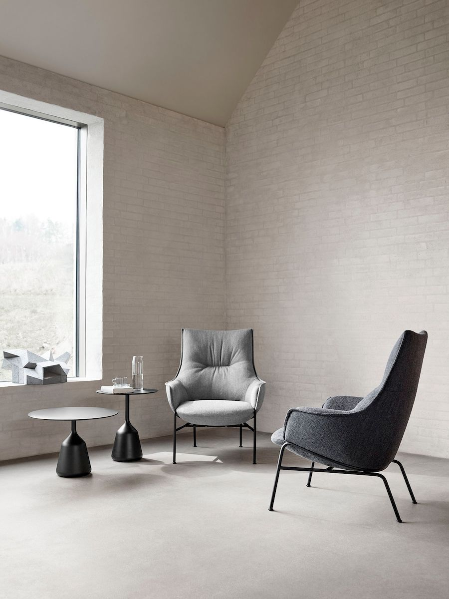
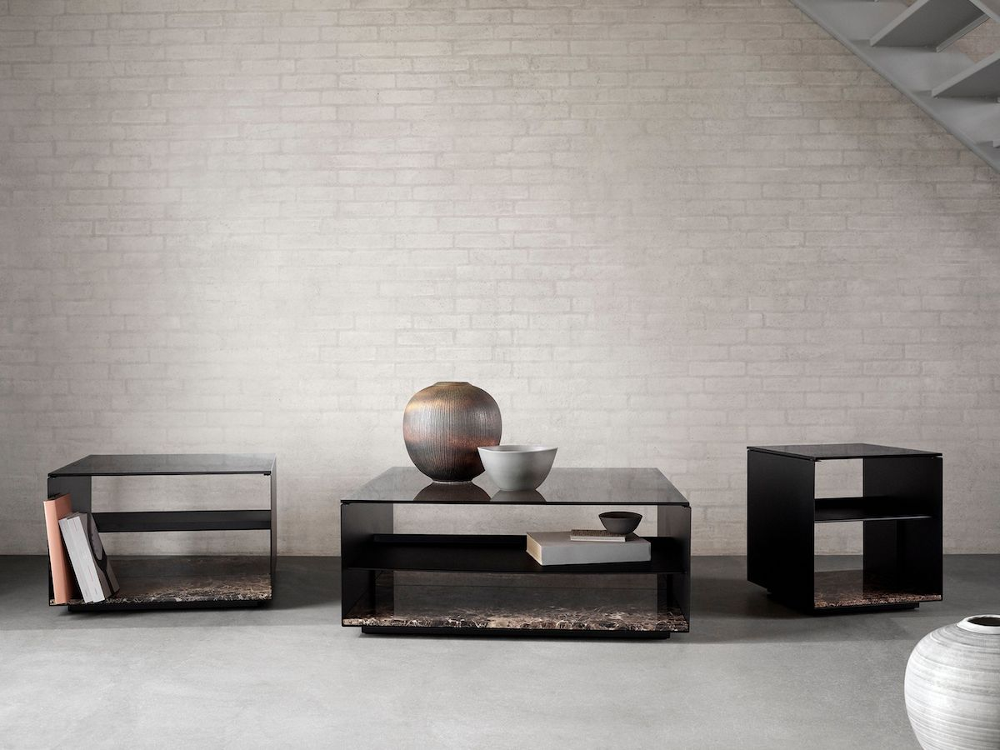
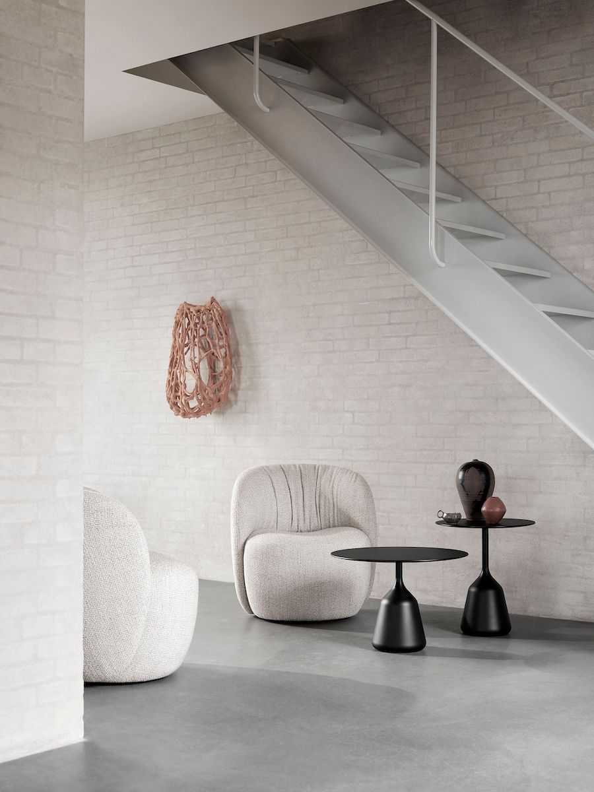

3 Tác phẩm cho không gian triển lãm tại gia từ Wendelbo
Wendelbo là thương hiệu nội thất Scandinavian với những thiết kế thanh lịch, cùng cách phối hợp vật
liệu tinh
tế và trình độ thủ công mỹ nghệ hoàn hảo.
Nguồn: Wendelbo
Khởi nguồn từ góc phố Aarhus, Đan Mạch, và tồn tại qua hơn 6 thập kỷ; ngày nay, Wendelbo là thương
hiệu nội
thất Scandinavian có sự hiện diện tại hơn 60 quốc gia trên khắp 6 châu lục. Năm 2007, thế hệ thứ 3
của gia
đình Wendelbo bắt đầu chuyển đến Sài Gòn để mở rộng kinh doanh, không lâu sau đó, họ quyết định
thành lập
một xưởng sản xuất + showroom rộng 25.000 mét vuông ngay tại Sài Gòn, với 800 nhân viên hiện đang
đồng hành
cùng công ty.
Nhắc đến Wendelbo là nhắc đến những thiết kế thanh lịch đúng với tinh thần Scandinavian, cùng cách
phối hợp
vật liệu tinh tế và trình độ thủ công mỹ nghệ hoàn hảo. Không chỉ tìm nguồn cảm hứng từ di sản của
gia đình,
Wendelbo còn thường xuyên cộng tác cùng các nhà thiết kế (NTK) và các studio nội thất để cho ra đời
những
tuyệt tác nội thất độc đáo, kết hợp nhiều tính năng và vật liệu.
Dưới đây là 3 thiết kế mới nhất trong các bộ sưu tập hợp tác của Wendelbo.
Aloe Lounge Chair, cộng tác cùng NTK người Ý Luca Nichetto: Vẻ đẹp của sự mềm mại

Mẫu Aloe Lounge Chair được sáng tạo bởi nhà thiết kế người Ý Luca Nichetto, lấy cảm hứng từ hình
dáng
của cây nha đam. | Nguồn: Wendelbo
Nha đam mang lại nhiều lợi ích sức khoẻ, điều này ai cũng biết. Tuy nhiên, trong mắt Luca Nichetto,
kết cấu
và hình dạng của loại cây này còn là nguồn cảm hứng để anh sáng tạo nên Aloe Lounge Chair (ghế để
thư giãn
và nằm chơi). Nếu để ý, bạn sẽ thấy chiếc ghế này phỏng theo dáng cong của lá nha đam, vừa mềm mại -
vừa
cứng cáp.
NTK Luca Nichetto cho biết, “Chiếc ghế này gồm phần khung đỡ bằng các thanh thép dạng ống sơn mài
màu đen, đỡ lấy phần đệm, để sản phẩm nội thất này có vẻ ngoài nhẹ như không-trọng-lượng.”
Phần đệm ghế được đặt vào khung theo dáng nghiêng và ôm trọn. Lối thiết kế này mang lại cho chiếc
ghế hình ảnh năng động, cùng cảm giác cân bằng tuyệt đối.
Trái ngược với hình dáng đệm cong và căng tròn, lớp lót bên trong của Aloe Lounge Chair lại vô cùng
mềm mại.
Phần lưng tựa có thêm một đường may ngang khỏe khoắn ở chính giữa - tạo ra hiệu ứng gập trên bề mặt
và khơi
gợi cảm giác thư giãn. Đường may viền cũng là một chi tiết quan trọng, mang đến sự gắn kết giữa lưng
ghế và
tay vịn, đồng thời cho thấy rõ hình dáng ôm sát.
“NTK Luca Nichetto, một lần nữa, đã thành công trong việc sáng tạo nên một thiết kế đột phá, một
niềm tự hào mới trong bộ sưu tập của Wendelbo. Hình dáng của chiếc ghế Aloe Lounge Chair này
mang đến cảm giác vô cùng nhẹ nhàng và thoải mái”, ông Lars Wendelbo, Design and Product
Manager tại Wendelbo, cho biết.
Mẫu Aloe hiện có sẵn với nhiều lựa chọn về chất liệu dệt và da.
Expose by Wendelbo, cộng tác cùng NTK người Thụy Điển Jonas Wagell: Nền tảng triển lãm tại gia

Nhà thiết kế Jonas Wagell đã mang đến ý tưởng thiết kế bàn phòng khách mới.
Mẫu Expose hiện có sẵn với 3 kích thước, tạo nên từ các vật liệu thép sơn mài đen, kính và đá
cẩm thạch.
| Nguồn: Wendelbo
Expose by Wendelbo là một ý niệm thiết kế sản phẩm mới và toàn năng - một thiết kế có thể được
sử
dụng như
một chiếc bàn cà phê, đồng lời là nền tảng triển lãm, trưng bày tại gia. Nói ngắn gọn, Expose by
Wendelbo
chính là một phương thức mới để trưng bày những món phụ kiện gia đình.
Là sáng tạo của NTK người Thuỵ Điển Jonas Wagell phát triển cho Wendelbo, Expose by Wendelbo hiện
thực hoá ý
tưởng sở hữu một chiếc bàn với đường nét dứt khoát, tận dụng những vật liệu chuyên biệt. Với chiếc
bàn này,
gia chủ có thể trưng bày những món đồ sưu tầm nghệ thuật và thiết kế, hoặc không, thì “giấu tạm" nó
vào
những góc khuất có chủ đích của chiếc bàn này.
Để thiết kế ra Expose by Wendelbo, trước tiên, Jonas Wagell đã thử gấp giấy để tìm ra hình dạng, kích
thước
và cấu trúc phù hợp. Giấy khi gấp lại sẽ dày lên, nên anh cũng đã thử áp dụng nguyên tắc đó với vật
liệu
thép mỏng, gấp gọn gàng để tạo nên dáng hình đơn giản.
Phần mặt kính hun khói được đặt trên phần thân bàn bằng thép, tạo cảm giác trong suốt, và ở phần đế
được đặt
một phiến đá cẩm thạch nhằm tăng thêm vẻ trang trọng và cân đối. Giữa phần mặt và đế là một kệ thép,
giúp
chiếc bàn thêm chắc chắn và tạo ra không gian sắp xếp đồ vật ở vị trí khuất tầm nhìn. Phần kệ chiếm
⅔ kích
thước bàn và kéo dài đến mép sau thân bàn, giúp khoảng trống phía trước đạt chiều cao tối đa. Thiết
kế như
vậy tạo không gian để bày sách, các đồ vật lớn hoặc cây cảnh.
Mẫu bàn hiện có sẵn 3 kích thước, có thể sử dụng riêng biệt hoặc ghép thành một cụm. Theo nhà thiết
kế, ý
tưởng Expose là sự kết hợp giữa phom dáng tối giản nhưng toát lên vẻ xa hoa theo tiêu chuẩn quốc tế.
Từ các
vật liệu thép sơn mài đen, kính hun khói và đá cẩm thạch, những chiếc bàn đã tạo nên một khu vực
trưng bày
trang nhã và sinh động.
Ovata, cộng tác cùng Note Design Studio: Mềm tựa chiếc ôm

Mẫu Ovata Lounge Chair của Wendelbo là một sản phẩm của Note Design Studio, là một chiếc ghế
lounge
được thiết kế nhỏ gọn, mang đến cảm giác thư giãn, cùng kiểu dáng ôm sát. | Nguồn: Wendelbo
Từ lâu, Note Design Studio đã ấp ủ ý tưởng tạo ra một chiếc gối với kiểu dáng mềm mại, đầy đặn và cân
đối,
tựa như một cái ôm ấm áp. Với ý tưởng đó, trong lần hợp tác mới nhất cùng Wendelbo, các nhà thiết kế
từ Note
Design Studio đã cho ra đời Ovata Lounge Chair.
Note Design Studio từng cộng tác cho bộ sưu tập của Wendelbo với mẫu ghế Mango Lounge Chair, và lần
này, công
ty vẫn tiếp tục tìm thấy nguồn cảm hứng từ thế giới các loài cây. Phần lưng tựa ôm sát của chiếc ghế
được
thiết kế dựa trên dáng hình của cây Ovata - một loài cây với những chiếc lá cong, mềm, và khỏe
khoắn.
Đây là dạng ghế ẩn chân, với phần đệm ngồi lớn hơn thông thường được gắn vào phần lưng tựa mềm mại,
dài đến
sát sàn nhà, giúp chiếc ghế nhìn như đang trôi nổi nhẹ nhàng trên mặt đất. Bề mặt của phần đệm ngồi
được
thiết kế lõm xuống, làm nổi bật phong cách hữu cơ và ‘mời gọi’ bạn đến thư giãn tại đây. Mặt trong
của phần
lưng tựa được thiết kế lót đệm cong nhẹ nhàng, tạo hình ảnh tương phản với bề mặt vải dệt mịn màng
bên
ngoài.
Với thiết kế độc đáo và kích thước tương đối tối giản, đội ngũ thiết kế đã hoàn thành được mục tiêu
tạo ra
kiểu dáng chân thật và đơn giản với mẫu ghế Ovata Lounge Chair. Triết lý thiết kế của họ là, nếu ấn
tượng
đầu tiên về một chiếc ghế là mềm mại và hấp dẫn, thì nó cũng phải đáp ứng đúng những mong đợi đó khi
bạn
trải nghiệm.
Các nhà thiết kế chia sẻ, “Một thiết kế tốt phục vụ cả công năng lẫn tinh thần. Tất nhiên, mẫu
Ovata Lounge Chair cũng không ngoại lệ”.